Intermediate SSM Analysis
Source:vignettes/intermediate-ssm-analysis.Rmd
intermediate-ssm-analysis.Rmd1. Generalizing the basic analyses
Generalizing to multiple means
We’ve already seen how adding the measures argument can
change ssm_analyze() from analyzing means to analyzing
correlations. Similarly, we can change it from analyzing all
observations as a single group to analyzing subgroups separately. This
is done using the grouping argument. This argument needs to
contain a single variable (name or column number) that specifies each
observation’s group. For instance, the Gender variable in
the jz2017 dataset is a factor with two levels: Female and
Male. To analyze each gender separately, we need to add the
grouping = "Gender" argument to the function call.
data("jz2017")
results <- ssm_analyze(
data = jz2017,
scales = PANO(),
angles = octants(),
grouping = "Gender"
)
summary(results)
#>
#> Statistical Basis: Mean Scores
#> Bootstrap Resamples: 2000
#> Confidence Level: 0.95
#> Listwise Deletion: TRUE
#> Scale Displacements: 90 135 180 225 270 315 360 45
#>
#>
#> # Profile [Female]:
#>
#> Estimate Lower CI Upper CI
#> Elevation 0.946 0.907 0.984
#> X-Value 0.459 0.422 0.498
#> Y-Value -0.310 -0.357 -0.266
#> Amplitude 0.554 0.511 0.600
#> Displacement 325.963 321.834 329.805
#> Model Fit 0.889
#>
#>
#> # Profile [Male]:
#>
#> Estimate Lower CI Upper CI
#> Elevation 0.884 0.839 0.928
#> X-Value 0.227 0.191 0.262
#> Y-Value -0.186 -0.225 -0.147
#> Amplitude 0.294 0.256 0.330
#> Displacement 320.685 313.386 327.985
#> Model Fit 0.824Note that the output of summary() looks the same as
previous mean-based analyses except that there are now two Profile
blocks: one for Female and one for Male. A similar modification will
occur if we generate a table and figure.
ssm_table(results)| Profile | Elevation | X.Value | Y.Value | Amplitude | Displacement | Fit |
|---|---|---|---|---|---|---|
| Female | 0.95 (0.91, 0.98) | 0.46 (0.42, 0.50) | -0.31 (-0.36, -0.27) | 0.55 (0.51, 0.60) | 326.0 (321.8, 329.8) | 0.889 |
| Male | 0.88 (0.84, 0.93) | 0.23 (0.19, 0.26) | -0.19 (-0.23, -0.15) | 0.29 (0.26, 0.33) | 320.7 (313.4, 328.0) | 0.824 |
ssm_plot_circle(results)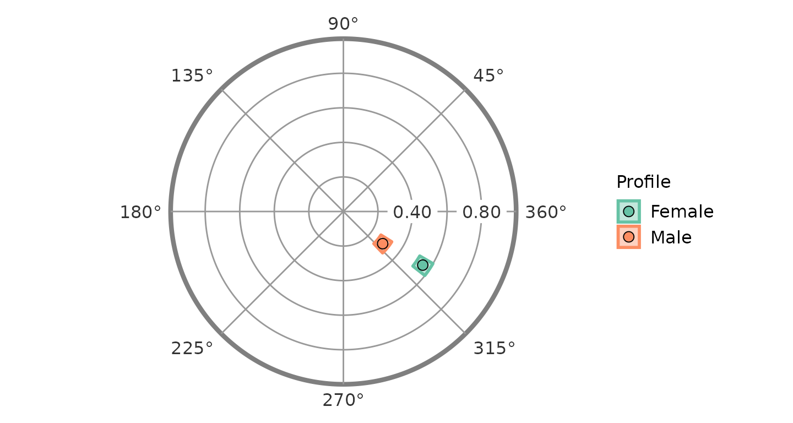
ssm_plot_curve(results)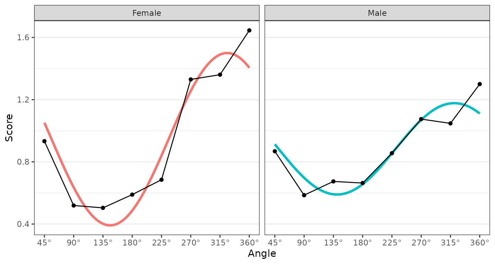
Any number of groups can be analyzed in this way, and the output will contain additional profile blocks, the table will contain additional rows, and the figures will contain additional points or curves. The grouping variable just needs to contain more than one level (i.e., unique value).
Generalizing to multiple measures
Similarly, we can analyze multiple external measures in a single
function call by providing a vector of variables to the
measures argument instead of a single variable. This can be
done by wrapping the variable names or column numbers with the
c() or, if they are adjacent columns, with the column
numbers and the : shortcut. The package functions were
written to analyze all measures and groups within a single
bootstrapping, so adding additional measures and groups should still be
fast.
results2 <- ssm_analyze(
data = jz2017,
scales = PANO(),
angles = octants(),
measures = c("NARPD", "ASPD")
)
summary(results2)
#>
#> Statistical Basis: Correlation Scores
#> Bootstrap Resamples: 2000
#> Confidence Level: 0.95
#> Listwise Deletion: TRUE
#> Scale Displacements: 90 135 180 225 270 315 360 45
#>
#>
#> # Profile [NARPD]:
#>
#> Estimate Lower CI Upper CI
#> Elevation 0.202 0.168 0.236
#> X-Value -0.062 -0.095 -0.026
#> Y-Value 0.179 0.145 0.214
#> Amplitude 0.189 0.155 0.225
#> Displacement 108.967 98.853 118.517
#> Model Fit 0.957
#>
#>
#> # Profile [ASPD]:
#>
#> Estimate Lower CI Upper CI
#> Elevation 0.124 0.090 0.157
#> X-Value -0.099 -0.134 -0.063
#> Y-Value 0.203 0.168 0.240
#> Amplitude 0.226 0.188 0.265
#> Displacement 115.927 107.250 124.516
#> Model Fit 0.964
ssm_table(results2)| Profile | Elevation | X.Value | Y.Value | Amplitude | Displacement | Fit |
|---|---|---|---|---|---|---|
| NARPD | 0.20 (0.17, 0.24) | -0.06 (-0.09, -0.03) | 0.18 (0.14, 0.21) | 0.19 (0.15, 0.22) | 109.0 (98.9, 118.5) | 0.957 |
| ASPD | 0.12 (0.09, 0.16) | -0.10 (-0.13, -0.06) | 0.20 (0.17, 0.24) | 0.23 (0.19, 0.27) | 115.9 (107.2, 124.5) | 0.964 |
ssm_plot_circle(results2)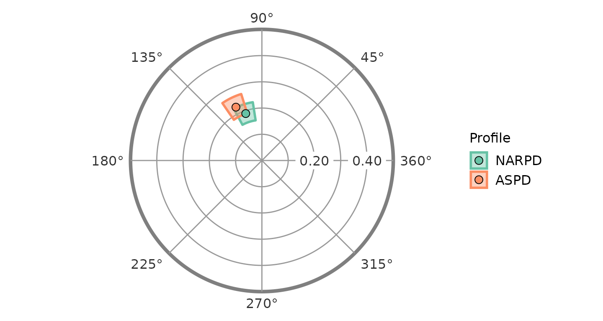
ssm_plot_curve(results2)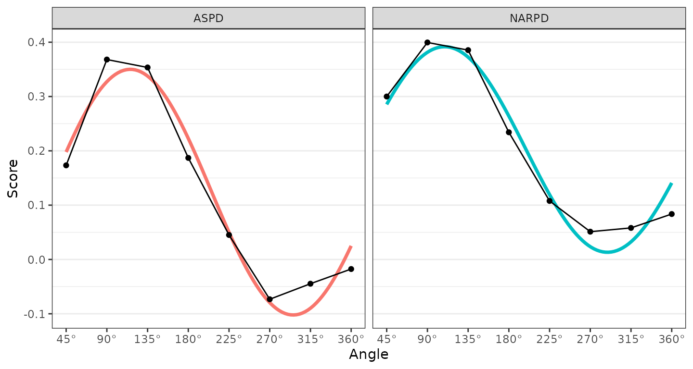
Generalizing to multiple groups and multiple measures
Finally, it is possible to analyze multiple measures within multiple
groups. As you might expect, this requires providing both the
measures and grouping arguments to the same
function call. Again, any number of measures and groups is possible. The
profiles in such an analysis will be named “Measure: Group” as
below.
results3 <- ssm_analyze(
data = jz2017,
scales = PANO(),
angles = octants(),
grouping = "Gender",
measures = 10:12)
summary(results3)
#>
#> Statistical Basis: Correlation Scores
#> Bootstrap Resamples: 2000
#> Confidence Level: 0.95
#> Listwise Deletion: TRUE
#> Scale Displacements: 90 135 180 225 270 315 360 45
#>
#>
#> # Profile [PARPD: Female]:
#>
#> Estimate Lower CI Upper CI
#> Elevation 0.262 0.220 0.305
#> X-Value -0.146 -0.192 -0.100
#> Y-Value 0.120 0.070 0.171
#> Amplitude 0.189 0.137 0.243
#> Displacement 140.524 126.580 155.129
#> Model Fit 0.870
#>
#>
#> # Profile [SCZPD: Female]:
#>
#> Estimate Lower CI Upper CI
#> Elevation 0.177 0.130 0.218
#> X-Value -0.230 -0.285 -0.173
#> Y-Value -0.047 -0.103 0.006
#> Amplitude 0.235 0.185 0.288
#> Displacement 191.613 178.684 208.113
#> Model Fit 0.845
#>
#>
#> # Profile [SZTPD: Female]:
#>
#> Estimate Lower CI Upper CI
#> Elevation 0.237 0.194 0.280
#> X-Value -0.130 -0.175 -0.087
#> Y-Value 0.016 -0.037 0.069
#> Amplitude 0.131 0.090 0.180
#> Displacement 172.870 151.247 198.040
#> Model Fit 0.812
#>
#>
#> # Profile [PARPD: Male]:
#>
#> Estimate Lower CI Upper CI
#> Elevation 0.243 0.193 0.288
#> X-Value -0.035 -0.080 0.015
#> Y-Value 0.114 0.066 0.165
#> Amplitude 0.120 0.075 0.171
#> Displacement 106.881 82.677 129.996
#> Model Fit 0.648
#>
#>
#> # Profile [SCZPD: Male]:
#>
#> Estimate Lower CI Upper CI
#> Elevation 0.204 0.145 0.260
#> X-Value -0.178 -0.220 -0.136
#> Y-Value -0.017 -0.071 0.039
#> Amplitude 0.179 0.139 0.222
#> Displacement 185.351 167.551 203.091
#> Model Fit 0.917
#>
#>
#> # Profile [SZTPD: Male]:
#>
#> Estimate Lower CI Upper CI
#> Elevation 0.240 0.186 0.293
#> X-Value -0.037 -0.084 0.011
#> Y-Value 0.029 -0.018 0.079
#> Amplitude 0.047 0.013 0.101
#> Displacement 142.345 68.178 218.702
#> Model Fit 0.424
ssm_table(results3)| Profile | Elevation | X.Value | Y.Value | Amplitude | Displacement | Fit |
|---|---|---|---|---|---|---|
| PARPD: Female | 0.26 (0.22, 0.30) | -0.15 (-0.19, -0.10) | 0.12 (0.07, 0.17) | 0.19 (0.14, 0.24) | 140.5 (126.6, 155.1) | 0.870 |
| SCZPD: Female | 0.18 (0.13, 0.22) | -0.23 (-0.29, -0.17) | -0.05 (-0.10, 0.01) | 0.23 (0.19, 0.29) | 191.6 (178.7, 208.1) | 0.845 |
| SZTPD: Female | 0.24 (0.19, 0.28) | -0.13 (-0.18, -0.09) | 0.02 (-0.04, 0.07) | 0.13 (0.09, 0.18) | 172.9 (151.2, 198.0) | 0.812 |
| PARPD: Male | 0.24 (0.19, 0.29) | -0.03 (-0.08, 0.01) | 0.11 (0.07, 0.17) | 0.12 (0.07, 0.17) | 106.9 (82.7, 130.0) | 0.648 |
| SCZPD: Male | 0.20 (0.15, 0.26) | -0.18 (-0.22, -0.14) | -0.02 (-0.07, 0.04) | 0.18 (0.14, 0.22) | 185.4 (167.6, 203.1) | 0.917 |
| SZTPD: Male | 0.24 (0.19, 0.29) | -0.04 (-0.08, 0.01) | 0.03 (-0.02, 0.08) | 0.05 (0.01, 0.10) | 142.3 (68.2, 218.7) | 0.424 |
ssm_plot_circle(results3)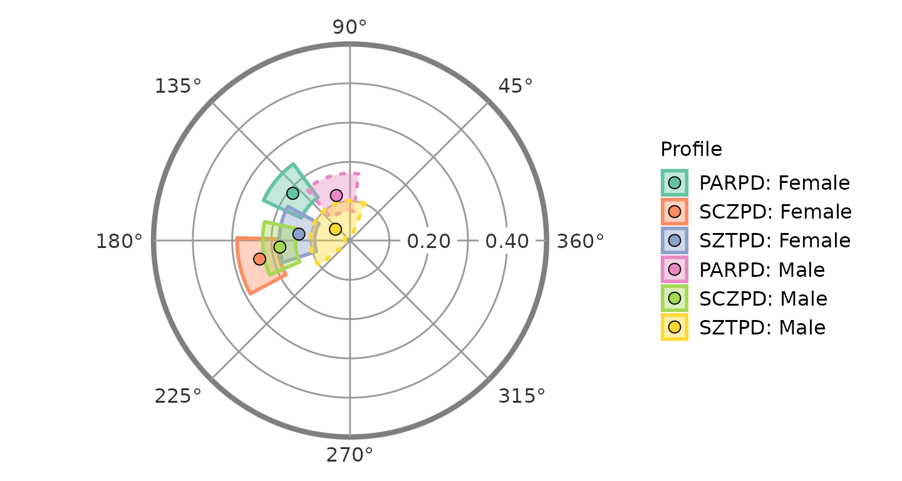
Note that the borders for the “PARDPD: Male” and “SZTPD: Male” blocks
are dashed instead of solid. This indicates that these profiles have low
fit (i.e.,
).
We could alternatively hide these such profiles by adding
lowfit = FALSE as below (noting that the color guide may
change as profiles are dropped).
ssm_plot_circle(results3, drop_lowfit = TRUE)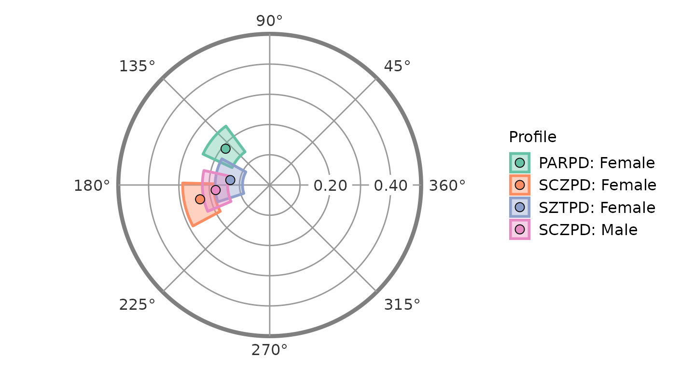
ssm_plot_curve(results3)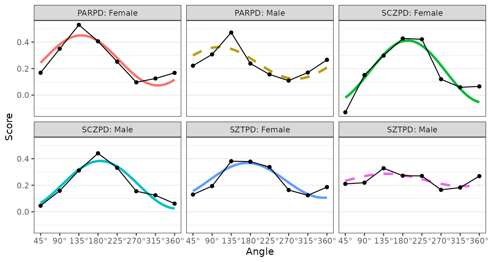
ssm_plot_curve(results3, drop_lowfit = TRUE)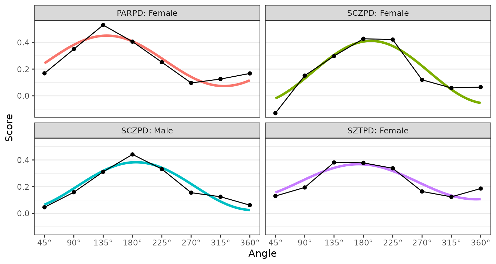
2. Contrast analyses
The final argument to master in this vignette is
contrast, which allows us to compare two groups or
measures. Setting this argument to TRUE will first generate scores for
each group (or measure), then estimate SSM parameters for these scores,
and finally calculate the difference between the parameters. To keep the
code simpler and to discourage “fishing expeditions,” only two groups or
measures can be compared at a time.
Contrasts between groups’ means
To compare the mean profiles for females and males, we can start with
the same syntax we had before and then add a contrast
argument.
results4 <- ssm_analyze(
data = jz2017,
scales = PANO(),
angles = octants(),
grouping = "Gender",
contrast = TRUE
)
summary(results4)
#>
#> Statistical Basis: Mean Scores
#> Bootstrap Resamples: 2000
#> Confidence Level: 0.95
#> Listwise Deletion: TRUE
#> Scale Displacements: 90 135 180 225 270 315 360 45
#>
#>
#> # Profile [Female]:
#>
#> Estimate Lower CI Upper CI
#> Elevation 0.946 0.908 0.984
#> X-Value 0.459 0.419 0.498
#> Y-Value -0.310 -0.353 -0.269
#> Amplitude 0.554 0.510 0.599
#> Displacement 325.963 322.251 329.698
#> Model Fit 0.889
#>
#>
#> # Profile [Male]:
#>
#> Estimate Lower CI Upper CI
#> Elevation 0.884 0.841 0.925
#> X-Value 0.227 0.191 0.261
#> Y-Value -0.186 -0.225 -0.148
#> Amplitude 0.294 0.256 0.331
#> Displacement 320.685 313.293 327.938
#> Model Fit 0.824
#>
#>
#> # Contrast [Male - Female]:
#>
#> Estimate Lower CI Upper CI
#> Δ Elevation -0.062 -0.119 -0.004
#> Δ X-Value -0.232 -0.285 -0.181
#> Δ Y-Value 0.124 0.066 0.183
#> Δ Amplitude -0.261 -0.318 -0.203
#> Δ Displacement -5.278 -13.627 2.178
#> Δ Model Fit -0.066Note that we have the profile blocks for each group as well as a contrast block. The contrast is made by subtracting the first level of the grouping variable from the second level (e.g., Male - Female). This provides an indication of the direction of the contrast. We can again generate a table and figure to display the results.
ssm_table(results4)| Contrast | Elevation | X.Value | Y.Value | Amplitude | Displacement | Fit |
|---|---|---|---|---|---|---|
| Female | 0.95 (0.91, 0.98) | 0.46 (0.42, 0.50) | -0.31 (-0.35, -0.27) | 0.55 (0.51, 0.60) | 326.0 (322.3, 329.7) | 0.889 |
| Male | 0.88 (0.84, 0.93) | 0.23 (0.19, 0.26) | -0.19 (-0.22, -0.15) | 0.29 (0.26, 0.33) | 320.7 (313.3, 327.9) | 0.824 |
| Male - Female | -0.06 (-0.12, -0.00) | -0.23 (-0.29, -0.18) | 0.12 (0.07, 0.18) | -0.26 (-0.32, -0.20) | -5.3 (-13.6, 2.2) | -0.066 |
ssm_plot_contrast(results4)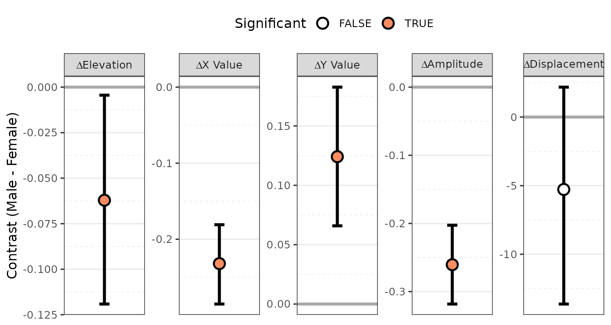
Contrasts between measures in a group
Comparing measures in a group is very similar. Again, all we need to
do is add the contrast argument to the function call
containing measures. Here we will use a parameter contrast
to see what they look like.
results5 <- ssm_analyze(
data = jz2017,
scales = PANO(),
angles = octants(),
measures = c("NARPD", "ASPD"),
contrast = TRUE
)
summary(results5)
#>
#> Statistical Basis: Correlation Scores
#> Bootstrap Resamples: 2000
#> Confidence Level: 0.95
#> Listwise Deletion: TRUE
#> Scale Displacements: 90 135 180 225 270 315 360 45
#>
#>
#> # Profile [NARPD]:
#>
#> Estimate Lower CI Upper CI
#> Elevation 0.202 0.169 0.233
#> X-Value -0.062 -0.097 -0.029
#> Y-Value 0.179 0.144 0.212
#> Amplitude 0.189 0.154 0.226
#> Displacement 108.967 99.122 118.902
#> Model Fit 0.957
#>
#>
#> # Profile [ASPD]:
#>
#> Estimate Lower CI Upper CI
#> Elevation 0.124 0.091 0.159
#> X-Value -0.099 -0.135 -0.065
#> Y-Value 0.203 0.166 0.237
#> Amplitude 0.226 0.190 0.265
#> Displacement 115.927 107.571 124.311
#> Model Fit 0.964
#>
#>
#> # Contrast [ASPD - NARPD]:
#>
#> Estimate Lower CI Upper CI
#> Δ Elevation -0.079 -0.114 -0.043
#> Δ X-Value -0.037 -0.074 0.002
#> Δ Y-Value 0.024 -0.014 0.061
#> Δ Amplitude 0.037 -0.002 0.075
#> Δ Displacement 6.960 -3.391 17.383
#> Δ Model Fit 0.007
ssm_table(results5)| Contrast | Elevation | X.Value | Y.Value | Amplitude | Displacement | Fit |
|---|---|---|---|---|---|---|
| NARPD | 0.20 (0.17, 0.23) | -0.06 (-0.10, -0.03) | 0.18 (0.14, 0.21) | 0.19 (0.15, 0.23) | 109.0 (99.1, 118.9) | 0.957 |
| ASPD | 0.12 (0.09, 0.16) | -0.10 (-0.13, -0.06) | 0.20 (0.17, 0.24) | 0.23 (0.19, 0.26) | 115.9 (107.6, 124.3) | 0.964 |
| ASPD - NARPD | -0.08 (-0.11, -0.04) | -0.04 (-0.07, 0.00) | 0.02 (-0.01, 0.06) | 0.04 (-0.00, 0.08) | 7.0 (-3.4, 17.4) | 0.007 |
ssm_plot_contrast(results5)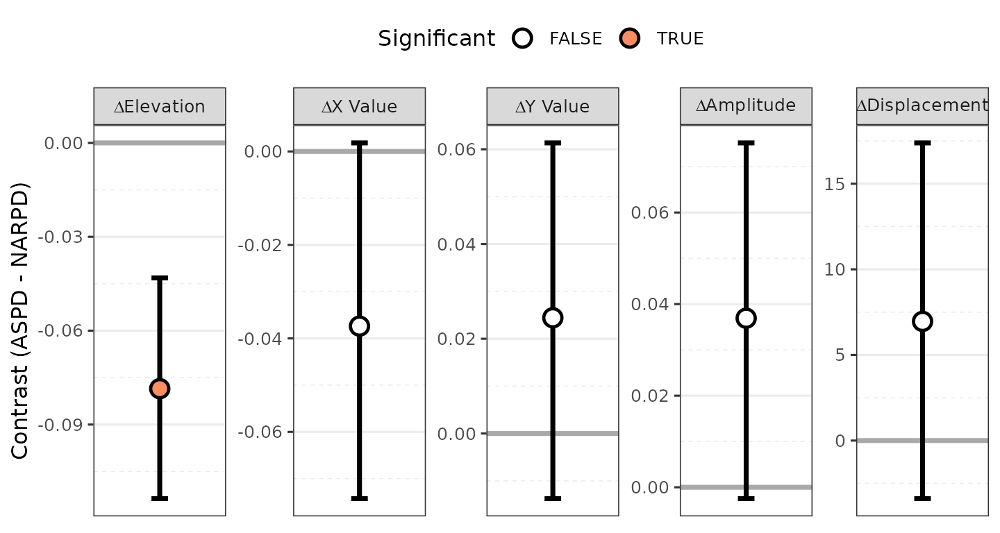
Here, instead of a circle plot, we see a contrast plot showing the difference between the two measures’ SSM parameters and their 95% confidence intervals. Because the confidence interval for the elevation parameter does not include zero, this parameter is significantly different between the measures.
Contrasts between groups’ correlations
Finally, we might want to compare a single measure’s profiles in two
different groups. To do so, we need to specify the
measures, the grouping variable, and the type
of contrast. In this case, we need to ensure that we are
providing only a single measure and a grouping variable with just two
levels (as again only two things can be contrasted at a time). Note that
the contrast name in this case will take the form of “Measure: Group2 -
Group1”.
results6 <- ssm_analyze(
data = jz2017,
scales = PANO(),
angles = octants(),
measures = "BORPD",
grouping = "Gender",
contrast = TRUE
)
summary(results6)
#>
#> Statistical Basis: Correlation Scores
#> Bootstrap Resamples: 2000
#> Confidence Level: 0.95
#> Listwise Deletion: TRUE
#> Scale Displacements: 90 135 180 225 270 315 360 45
#>
#>
#> # Profile [BORPD: Female]:
#>
#> Estimate Lower CI Upper CI
#> Elevation 0.251 0.206 0.293
#> X-Value -0.068 -0.114 -0.021
#> Y-Value 0.126 0.064 0.184
#> Amplitude 0.143 0.084 0.203
#> Displacement 118.247 99.973 138.946
#> Model Fit 0.947
#>
#>
#> # Profile [BORPD: Male]:
#>
#> Estimate Lower CI Upper CI
#> Elevation 0.320 0.267 0.370
#> X-Value 0.012 -0.034 0.058
#> Y-Value 0.054 0.004 0.106
#> Amplitude 0.055 0.016 0.109
#> Displacement 77.367 12.983 133.991
#> Model Fit 0.500
#>
#>
#> # Contrast [BORPD: Male - Female]:
#>
#> Estimate Lower CI Upper CI
#> Δ Elevation 0.069 0.000 0.136
#> Δ X-Value 0.080 0.017 0.146
#> Δ Y-Value -0.072 -0.152 0.010
#> Δ Amplitude -0.088 -0.160 -0.003
#> Δ Displacement -40.880 -105.533 19.259
#> Δ Model Fit -0.447
ssm_table(results6)| Contrast | Elevation | X.Value | Y.Value | Amplitude | Displacement | Fit |
|---|---|---|---|---|---|---|
| BORPD: Female | 0.25 (0.21, 0.29) | -0.07 (-0.11, -0.02) | 0.13 (0.06, 0.18) | 0.14 (0.08, 0.20) | 118.2 (100.0, 138.9) | 0.947 |
| BORPD: Male | 0.32 (0.27, 0.37) | 0.01 (-0.03, 0.06) | 0.05 (0.00, 0.11) | 0.06 (0.02, 0.11) | 77.4 (13.0, 134.0) | 0.500 |
| BORPD: Male - Female | 0.07 (0.00, 0.14) | 0.08 (0.02, 0.15) | -0.07 (-0.15, 0.01) | -0.09 (-0.16, -0.00) | -40.9 (-105.5, 19.3) | -0.447 |
ssm_plot_contrast(results6)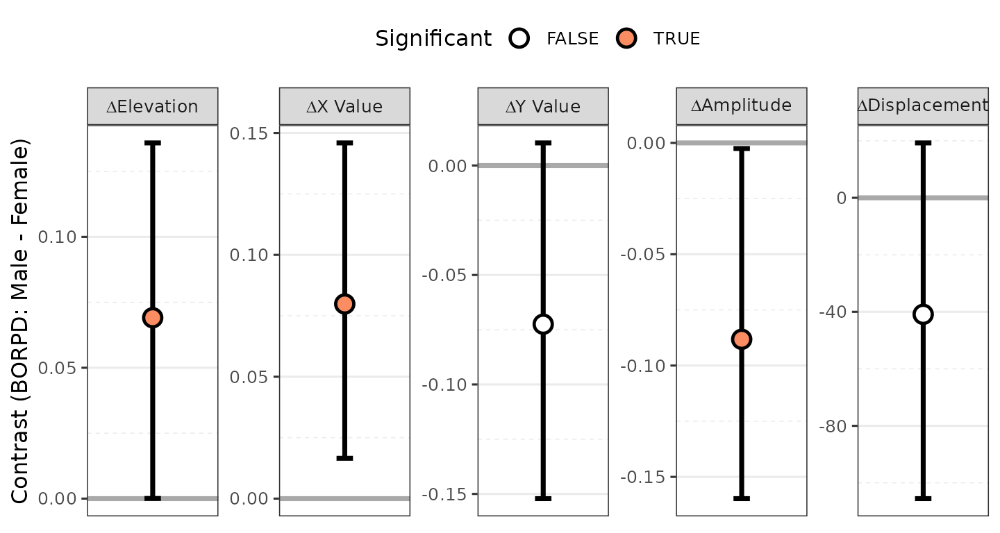
3. Taxonomy of analysis types
Although all SSM analyses are based on the idea of decomposing
circumplex scores into the parameters of a cosine curve, there are
actually many different ways to implement it. Each of these
implementations allows different questions to be explored. In the table
below, a list of the SSM analysis types that are currently implemented
in the circumplex package is provided. This table also
provides the specific combination of arguments needed to implement each
analysis using the ssm_analyze() function. Specifying which
analysis to run is simply a matter of providing the correct arguments to
the function; this allows a single function to essentially do the work
of seven and makes for a more intuitive user experience.
| Usage | measures | grouping | contrast |
|---|---|---|---|
| Examine overall mean profile | FALSE | FALSE | FALSE |
| Examine groups’ mean profiles | FALSE | TRUE | FALSE |
| Compare groups’ mean profiles | FALSE | TRUE | TRUE |
| Examine variables’ correlation profiles | TRUE | FALSE | FALSE |
| Compare variables’ correlation profiles | TRUE | FALSE | TRUE |
| Examine groups’ correlation profiles | TRUE | TRUE | FALSE |
| Compare groups’ correlation profiles | TRUE | TRUE | TRUE |
The three main questions to ask when conducting a new SSM analysis are:
Do we want to project non-circumplex measures into the circumplex space? If yes, we must specify one or more
measures, and the scores that get modeled using SSM will be the correlations between the circumplex scales and these measures. If no, we must omit themeasuresargument, and the scores that get modeled using SSM will be the mean scores on the circumplex scales.Do we want to perform analyses separately for groups within the dataset? If yes, we must specify a
groupingvariable, and the output will contain results for each group (i.e., unique value of this variable). If no, we must omit thegroupingargument, and a single set of results for all data will be output.Do we want to contrast/compare two sets of results? If yes, we must specify
contrastas TRUE and ensure that we are only requesting two sets of results (i.e., two groups or two measures). If no, we must omit thecontrastargument or set it to FALSE, and the results themselves will be output, rather than their contrast.
4. Working with SSM tables
Basic customizations of tables
Additional arguments to the ssm_table() function can be
explored using the ?ssm_table command. Two useful options
are the drop_xy argument, which shows or hides the x-value
and y-value columns, and the caption argument which allows
a custom string to be printed above the table. Note as well that the
return object of this function is just a data frame, which can be easily
edited to add, change, or remove text. To change the formatting of the
table, see the htmlTable or kableExtra
packages.
5. Working with SSM figures
Exporting figures as files
All SSM plots are created using the ggplot2 package,
which is incredibly flexible and powerful. It also offers the
ggsave() function to export figures to external files of
various types. See the documentation for this function
(?ggsave) to learn more, but some useful arguments are
filename, plot, width,
height, and units. We can save the figure as a
raster image file (e.g., “png”, “jpeg”, “tiff”), a vector image file
(e.g., “svg”), or a portable document (e.g., “pdf” or “tex”). We can
also control the exact width and height of the image in different units
(i.e., “in”, “cm”, or “mm”). Because the underlying graphics are
vectorized in R, they can be easily scaled to any size without loss of
quality and used in manuscripts, presentations, or posters.
ssm_plot(results6)
ggsave("bordpd_gender.png", width = 7.5, height = 4, units = "in")Wrap-up
In this vignette, we learned how to generalize the SSM analyses to multiple groups and measures, how to conduct contrast analyses, how to make basic customizations to tables and figures, and how to export tables and figures to external files. In the next vignette, “Advanced Circumplex Visualization,” we will learn more advanced customization options for the SSM figures and other circumplex visualizations. (Note that the next vignette is still in progress.)
References
Gurtman, M. B. (1992). Construct validity of interpersonal personality measures: The interpersonal circumplex as a nomological net. Journal of Personality and Social Psychology, 63(1), 105–118.
Gurtman, M. B., & Pincus, A. L. (2003). The circumplex model: Methods and research applications. In J. A. Schinka & W. F. Velicer (Eds.), Handbook of psychology. Volume 2: Research methods in psychology (pp. 407–428). Hoboken, NJ: John Wiley & Sons, Inc.
Wright, A. G. C., Pincus, A. L., Conroy, D. E., & Hilsenroth, M. J. (2009). Integrating methods to optimize circumplex description and comparison of groups. Journal of Personality Assessment, 91(4), 311–322.
Zimmermann, J., & Wright, A. G. C. (2017). Beyond description in interpersonal construct validation: Methodological advances in the circumplex Structural Summary Approach. Assessment, 24(1), 3–23.